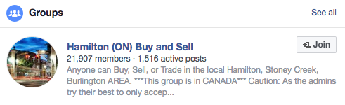
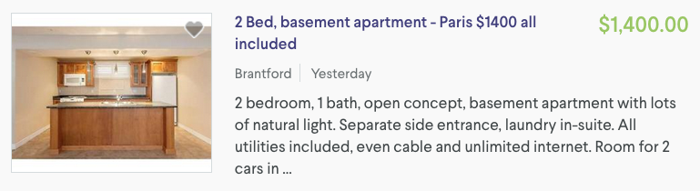

CheckMark Tutoring: How-To Guides for Canadians
CheckMark Tutoring: How-To Guides for Canadians Q: How do I rent a home? Where do I even begin?
*this guide is relevant to those looking to rent a home in Canada, and more specifically, Ontario
OFFICAL TUTORING HOW TO: Renting a Home in Ontario, Canada
- Search for rental properties
- There are several ways to search for rental properties but the ones that I have had the most success with in Ontario are Kijiji and Craigslist. Unfortunately, Kijiji does not offer a map view so that you can see easily see where possible rental properties are. Craiglist does have this option and it is very useful. As a workaround for Kijiji, you can use the Kijiji app (for Android or iOS) and search for rental properties nearby by setting a filter to only include postings that are a specific distance from your location. You can then sort those results by distance so it shows the closest ones to you first.
- Realtor.ca (MLS) will have some rental listings. Make sure to change the default search option from 'for sale' to 'for rent'. Keep in mind that these listings are generally being sold by a real estate agent. In my experience, this means that you are less likely to find a good deal. There is a Realtor.ca app available for both Android and iOS.
- Check on Facebook for ‘buy and sell’ groups in your area like the one for Hamilton, Ontario below. This has the added benefit of allowing you to find out who the landlord is in advance since they are usually the ones that post the ad.

- Other useful rental property search sites (in my order of preference) include www.padmapper.com (there is also an app called 'PadMapper Apartment Rental Search' on Android and iOS), www.rentcompass.com, www.nexthome.yp.ca, www.rentseeker.ca, www.rentfaster.ca (primarily for condos/apartment buildings) and www.viewit.ca (which is primarily for Toronto area apartments)
- Assess whether the rental property meets your needs
- Location, location, location! I’m sure you’ve heard it before. Find a rental property that is an area that makes sense for you. Determine whether the move will decrease or increase your transportation costs (e.g. drive to/from work).
- Determine if the rental property includes laundry and parking and if not, find out how much extra this will cost you per month
- Find out if appliances are included (usually they are).
- Find out who is in charge of maintenance such as shoveling snow and cutting grass
- Will you be living with other people in the rental property? If you will be living with other people then find out who they are. Are they young students, an older couple, a large family? Does the landlord live in part of the property? This make some people feel uncomfortable, while others seem to appreciate that the landlord may be quicker to do repairs on the house.
- Analyse the rent cost by finding out what is included
- Make sure you check to find out if the rent cost that is being advertised includes utilities or not (typically it does not). Utilities include heat, water and electricity according to the Residential Tenancies Act. Internet and cable television are generally separate. For example, the Kijiji ad below states that all utilities are included (referring to heat, water and electricity) and then make specific mention of Internet and cable also being included.

- Costs of utilities if they are not included in the rent will vary depending on the number and nature of the tenants so that the following estimates with a grain of salt. Expect electricity costs to be around $100-200 per month, heating costs to be around $60-120 per month in the winter, municipal water costs to be around $50-80 per month, average high-speed internet service (download speeds of 20-30 Mbps with data usage per month around 100-150GB) will cost around $65/month, and a ‘starter package’ from Rogers for cable television is around $30/month.
- If you are able to get utilities include at a fair price then it is advantageous to do so since it allows you to have set costs each month and protects you from increases in energy costs. However, if you are someone that doesn’t usually use much heat/water then it might make more sense to not include utilities since landlords often charge a higher amount than average in case you might be a tenant that is wasteful.
- If you decide to pursue a property that does not have utilities included, then find out how consumption will be measured and how energy efficient the place is
- This will be especially important if there are multiple units in the rental property you are considering.
- Determine whether the rental property is energy efficient by checking to make sure that windows are sealed properly. Keep in mind that basements will almost always cost more to heat than an upper floor rental property.
- Check the windows for drafts in the house since this means that heat is escaping.
- IF there is a tenant that is currently living in the rental property that you are considering, then you could ask them what their costs are.
- Set up a meeting with the landlord to view the property
- Take this opportunity to get the name and phone number of the landlord
- Remember that you are trying to make a good impression as a prospective tenant if you want the place. Dress and act accordingly.
- Upon viewing the property, check to see if the rental property is secure (e.g. locks are functioning on all external doors).
- Is there window coverings? These can be expensive if not.
- If you are looking at a basement apartment, you may want to find out what kind of floors are above you. Carpetwill mask sounds much better than hardwood.
- If you’re interested in the property and want to commit, consider negotiating your monthly cost
- Negotiating the rental cost is a normal occurrence. However, if a rental property is getting a lot of interest than this is unlikely to be a smart plan if you really want the place.
- Tenant screening (and when you should be doing your own landlord screening)
- It is a standard procedure (and completely legal) for landlords to ask for information that will allow them to determine whether you will be a good tenant. This includes your credit rating, employment history, references and income information.
- Your credit rating is largely based on paying credit card payments on time. If you don’t have much history with credit cards then you may need to get a guarantor’s letter from a family member or friend that says they will make the payment if you fail to pay.
- A letter from your employer that states your salary and how long you have been employed will be useful.
- Landlord screening: It is a good idea to find out a little about the landlord as well. If there is a tenant living in the rental property then ask them what they think of the landlord when he/she is not around. See if you can 'creep' them on Facebook or type their name into google to see what comes up.
- Read the lease (aka tenancy agreement or rental agreement) carefully and make changes as needed prior to signing
- Leases are designed to protect landlords, not tenants. A lease is not required at all and tenants would be protected by the law so it is only really for the benefit of the landlord to have one signed by you.
- All agreements made orally should be included in the lease. For example, if the landlord says they are going to make a repair, then make sure it is included in the lease.
- The lease should be signed and dated. It should also include the date the tenant will move into the unit, the rent costs, the date(s) when rent is to be paid, what is included in the rent (e.g. parking, utilities), the length of rent (e.g. usually 1 year but can be month-to-month), notice required when ending the tenancy (e.g. usually 60 days), termination of lease conditions, when and how a landlord can enter the rental property.
- Landlords are responsible for snow removal unless otherwise stated by the lease. Garbage removal is something that should be discussed and agreed upon with the landlord prior to signing the lease.
- Generally a landlord may only enter a tenant's unit under specific circumstances in Ontario (e.g. to make repairs, viewing for a potential buyer of the property). A landlord may only enter the property between 8am and 8pm. The landlord must also provide at least 24 hours written notice to the tenant with reasons why and let you know what time they will be coming unless it is an emergency. If you included a cleaning or maintenance condition in your lease (e.g. snow removal, grass cutting, etc.) then landlords are allowed to be on the property without notice being given.
- A tenancy agreement should include the name and address of the landlord. Ensure that this is included.
- If you know that you would like to stay for an extended period of time then it can be beneficial to sign a lease for a full year so that the landlord can’t evict you if they feel like moving in, doing renovations, etc. (if it is month-to-month then they only have to give you 60 days notice). However, from the tenant’s perspective, you will be required to give the same notice (60 days) to the landlord if you want to end the tenancy regardless of whether you are on a lease for a year or if you are a month-to-month renter. The difference is that you may be expected to find someone to take over your lease if you have committed to more than a month-to-month rental agreement or end up paying for the time that rental property was unoccupied.
- Make a copy of the lease and submit it to the landlord
- Technically it is up to the landlord to provide a copy of the lease with the signatures of both the tenant and landlord but it is a good idea to make a copy beforehand as well.
- Have the locks changed
- You can have the landlord change the locks so that you know that the previous tenant will not have access to your place.
- Pay first and last month’s rent (aka rent deposit) and possibly a deposit for the cost of replacing the keys (which is returned if you return the keys)
- Technically it is illegal for a landlord to ASK for more than the first and last month’s rent prior to a tenant moving into a property. The last month’s rent is considered to be the rent deposit. This means that a landlord should also not be asking for a ‘security deposit’ that would be used if there is damage to the property. However, this doesn’t mean that landlords won’t ask for it and if you want to pay this then that is your choice. A tenant can choose to pay more of the rent up front if the landlord agrees.
- A landlord can ask for the rent deposit (last month’s rent) a maximum of one day before the tenancy agreement begins
- The rent deposit can only be used by the landlord for rent (not to be used on damages, cleaning ,etc.).
- Landlords are also required to pay annual interest on the deposit.
- Landlords are allowed to ask for postdated cheques but tenants are not required to provide them
- IMPORTANT: Do not pay with cash and make sure that rent cheques are always made out to the landlord.
- IMPORTANT: Make sure that you obtain a receipt of the payment for any rent or security deposit! This receipt should include the address of the rental property, the landlord’s name and phone number.
- Take pictures
- It is a good idea to take pictures of any pre-existing damages (inside and out) that exist in the rental property so that you are not held responsible when you leave
- Strongly consider getting tenant insurance (aka renter’s insurance) since you are not protected by your landlord’s insurance if they have it (unless it is their fault)
- This is not required by law, although some landlords may include a condition that states that you will purchase tenant insurance. If it is agreed upon in your lease and you don't purchase tenant insurance, then you could be evicted.
- On average, this can cost you around $20 per month, although you can reduce costs by eliminating some protections (e.g. removing optional flood/leak insurance if you are not in the basement).
- The general consensus is that renter’s insurance is worth it at the small cost you have to pay to avoid a nightmare situation if anything were to happen (e.g. fire, theft).
- Make sure to check with the company that you get auto insurance with (assuming you have a vehicle) since companies often give discounts on auto insurance when you get renter’s insurance.
- Paying for utilities IF it is not included in your monthly rent costs
- This can be done by providing the landlord with a cheque each month upon being presented with the utility bills OR the landlord and tenant can agree to have the tenant handle all bills. Generally, landlords will choose the former.
Guess what? You're finished! Go enjoy your new property rental!
What's that? You still have questions now that you are renting? Then continue reading below!
Q: Alright, so I've followed your guide and I have now moved in. Any tips now that I am renting?
Here are a few tips to keep in mind while you're renting:
- Get everything in writing and collect receipts for all payments!
- Emails are useful for creating a paper trail when conflicts arise. Regardless of whether you agreed to something in person, it is not confirmed until it is put in writing.
- Make sure you get a receipt for all payments that you make. By law, landlords must give receipts if you ask for one. They should include the address of the rental property, the name of the tenant and landlord, the amount and date of the payment (as well as what it is for) and the signature of the landlord.
- You have no legal obligation to renew a lease so when your lease is finished, you continue as month-to-month. You cannot be evicted for a landlord to re-rent the unit.
- If a landlord tries to get you to sign a new lease, my recommendation is that you don’t if you are not sure that you are going to stay there for a full year. Even if you refuse to sign a new lease, the landlord cannot evict you unless you don’t pay the rent when you should or you have caused major issues OR if the landlord or a potential buyer is going to use the rental property for themselves or family to live in or to renovate extensively.
- Update: As of September 1, 2017, the Ontario government has imposed new tenant protections which states that when a landlord evicts a tenant to use the unit for themselves or family members, they are required to give the tenant one month's rent as compensation. They also have the option of offering the tenant another rental unit. The landlord must state that they (or a family member) plan to live in the rental unit for at least one year and if there is any evidence that the unit has been re-rented, advertised, demolished or converted before that one year is up, there is a potential $25,000 fine that landlords will face.
- Give your landlord at least 60 days notice that you are ending your tenancy
- Regardless of whether you are a month-to-month renter or have entered a tenancy agreement for a longer period of time (e.g. one year) and will need to break your lease, you need to give the landlord 60 days notice that you are ending your tenancy.
- Inform your landlord of any repairs that need to be made to the property immediately upon noticing them
- If a repair needs to made on the property, inform your landlord in writing about the issue.
- Do NOT withhold a rent payment because your landlord has not fixed an issue. If a landlord does not fix an issue in a timely manner, then you will need to contact the Landlord and Tenant Board (LTB).
- Landlords must allow heat to be turned on from September 1 to June 15 (minimum temperature of 20 degrees).
Q: What if I've decided that I want a pet while I am renting in Ontario?
A: Technically, you are allowed to have pets in any rental property regardless of whether the lease that you signed says that you can’t in Ontario. Other provinces differ in this regard. Even if you are technically ‘breaking your lease’ by having a pet, there is not much a landlord can do about that in Ontario unless there is someone that is allergic in the same rental property or if your pet is causing serious disturbances. That being said, it is also not a great idea to make your landlord upset unnecessarily if you had agreed to a 'no pets' condition in your lease.
Q: My landlord is showing up in the rental unit without giving me 24 hours written notice, without any conditions in the lease that allow it and there is no emergency that would permit him/her to be here. What do I do?
A: This is a tricky one. Make sure that your lease does not allow the landlord to enter the unit without notice. Since the rental property gives you the right to privacy in your unit, you are technically within your right to call the police if someone (even your landlord) is illegally entering your property. You may need to Landlord and Tenant Board (LTB) if the issues continues.
Q: When and by how much can the landlord increase rent on me in Ontario?
A: A landlord can increase the rent on a NEW tenant by whatever he/she wants. However, if you have already been renting a rental property, then there are very specific rules that landlords must follow. In Ontario, the government sets a maximum percentage that landlords can increase rent by each year. For example, the maximum that a landlord can raise the rent by in Ontairo for 2017 is 1.5% and 1.8% for 2018. As of 2017, this applies to ALL rental properties regardless of the year that it was built. Landlords can only increase the rent once every 12 months and there must be at least 90 days written notice of this increase. If a landlord chooses not to increase the rent in any given year, they cannot carry forward the allowable rent increase to the next year.
Q: How can I break my lease early in Ontario?
A: If you break a rental lease, which is a legal contract, then a landlord could attempt to make you pay the rent owed until the end of your lease. A landlord could pursue a lawsuit if you do not agree to pay. A tenant is responsible for paying the rent up to the end of the lease.
However, it is very difficult for a landlord to collect money if a tenant breaks their lease early. They are legally required to try to re-rent the unit to reduce their damages so the most they could sue for is the amount of time the unit remained empty.
If you know in advance that you are going to want to break the lease prior to signing it, then put a termination clause into the lease. For example, in Ontario you are able to leave penalty free within 60 days notice. A lease is allowed to be month by month (or any other period of time shorter than a year) from day 1 if the landlord and tenant agree to it. Most tenants sign a one year lease and then when it expires, they just stay month to month without renewing the term.
There are a few options for the tenant if he/she wants to break the lease that does not have a termination clause written into the lease. I have not included subletting as an option since it does not fully remove you from the lease and you are now responsible for the person who you sublet to.
Here are 3 options if you decide that you must break your lease early in Ontario:
Option #1: Firstly, you can make a written request that a landlord allow you to break the lease. Make sure you get this in writing and should include the address of the place that you are renting, date the tenancy will end, signatures of both the tenant and landlord and the date which the agreement was signed. It is suggested that you complete an ‘Agreement to End the Tenancy’ form (Form N11) from the Landlord and Tenant Board (LTB). This is the easiest option if your landlord is willing to do this.
Option #2: If the landlord does not allow this, then you can make a written request for an assignment which means that you would have to find a new tenant to take over the lease (obviously this will be more work for you than option #1). The new tenant (assignee) will pay the same amount of rent as the original tenant and all of the terms of the original lease will remain the same. The new tenant is now responsible for any damages or rent owing and in so doing, it removes any liability risk for you (as opposed to subletting). A landlord must respond to the request for assignment within 7 days. If there is no response or the landlord refuses to allow assignment, a tenant can file to end their lease on the 8th day by giving written notice to the landlord (complete the ‘Tenant’s Notice to Terminate the Tenancy’ form, aka Form N9 from the LTB). This notice must be given 30 days before the tenant moves. A landlord cannot unreasonably refuse to consent to an assignment (e.g. has to be for good reason such as the person had not paid the landlord in the past, etc.). The landlord is allowed to charge for reasonable costs associated with assigning the unit (e.g. credit check for new tenant).
Option #3: Break the lease and risk being taken to small claims court to be held liable for rental loss by the landlord. Landlords must attempt to re-rent an apartment unit and can only sue for whatever rental loss they occur based on the difference after re-renting the unit. The odds will be stacked in the tenants favour if there is the tenant argues that they broke their lease due to danger to health/safety, place not being fit to live or landlord harassment (e.g. excessive noise on the property causing mental health issues, landlord entering unit illegally, heat not working properly, etc.).
NOTE: The last month’s rent is technically to be used for the last month that a tenant LIVES in a rental property. So assuming that you provided the landlord with 60 days notice of the end of your tenancy, the landlord has agreed to end the tenancy or is fine with allowing your to find someone else to take over the tenancy, then you do not have to forfeit the last month’s rent money as a ‘penalty’.
Comments - Ask questions and/or provide feedback below!
*you can comment as a guest without registering/signing in by clicking on the 'Name' box below and checking the 'I'd rather post as a guest' box. If you don't feel comfortable providing your own email, you can just make one up (e.g. fakeemail@gmail.com).